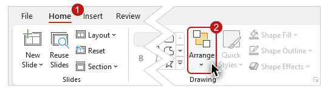
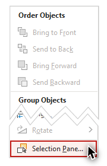
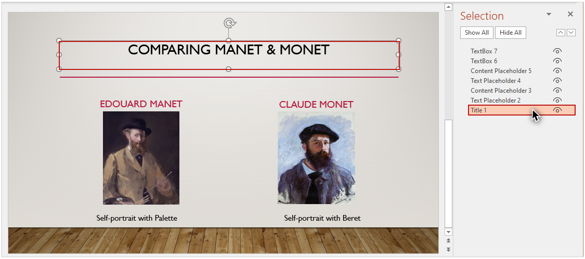
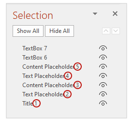
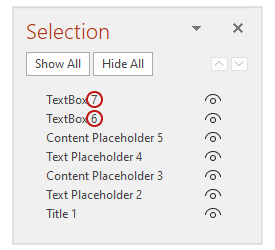
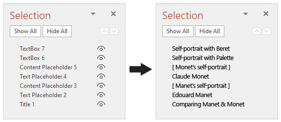
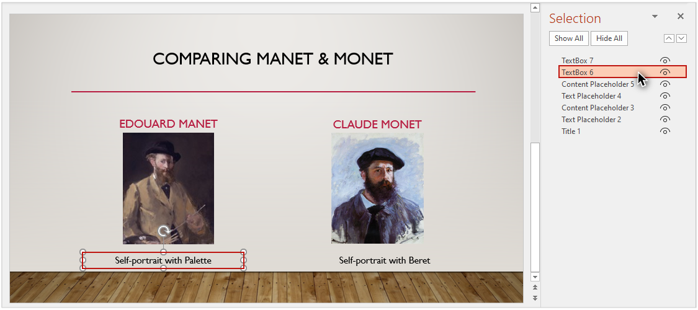
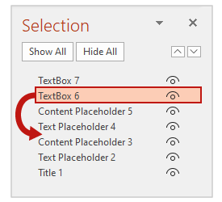
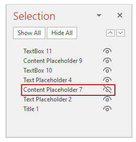
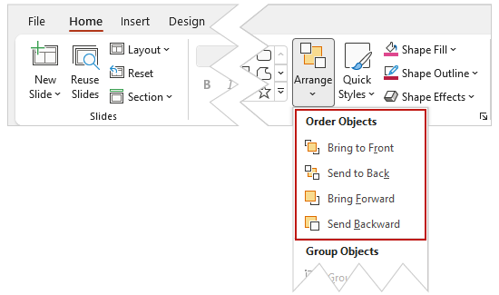

Video
Example File
Guide
Reading Order & Principles of Accessibility
The content on a slide must be presented to assistive technology users in an order that is equivalent to the order in which it is presented visually. In this video I will demonstrate how to review the “reading order” of a slide’s content, and how to make corrections when necessary. I will also review some accessibility principles for creating presentations that are optimized for a broad spectrum of users.
Objectives
- Gain an understanding of the relationship between reading order and the visual order of the objects on a slide.
- Identify the process for checking and editing the order of the objects on a slide.
Slide Reading Order
“Reading Order” is the sequence through which an assistive technology user experiences content. For example, by default, the objects on a slide will be read by screen reading software in the following order:
- Title Placeholder.
- Other Placeholders (as they are ordered in a slide's Layout).
- Any objects added to a slide.
Adding Objects to a Built-in Layout
Although it is best to use slide layouts whenever possible—

There may be times when you need to add additional objects to a slide, and creating a custom layout in the Slide Master is not practical.
To demonstrate this concept, I’ll show you how I created the example file for this section. I'll open a blank presentation on Windows. On the Ribbon I’ll click the Design tab, select the “Gallery” theme, click the Home tab, and insert a new slide using the Comparison Layout.
Then I will add content to the slide’s five placeholders. I’ll type “Comparing Manet & Monet” into the Title placeholder. I’ll add Manet’s name to the first Text placeholder, and his self portrait to the Content placeholder below it. I’ll repeat the process for Monet with the second set of placeholders.
I also want to add the names of both works of art to the slide. I’ll add a “Text Box” under Manet’s painting by selecting the Insert tab, selecting Text Box, and dragging a shape. Then I’ll repeat this process to create a text box under Monet’s painting.

Because these added objects are not part of the default placeholder structure in the Comparison Layout, adding them has created an illogical reading order.
The names of both paintings will be read last.
Selection Pane
I'll use the Selection Pane to check and edit the reading order of this slide.

To view the Selection Pane on Windows (or Mac):
-
Select the HOME tab on the Ribbon.
-
Select the Arrange tool.

-
Click on "Selection Pane" from the dropdown menu.

The Selection Pane will appear in the right-hand sidebar. The pane shows a list of all of the objects on a slide. When I select an object in the list, it is highlighted on the slide.

The name assigned to an object is based on its type. Objects are also numbered based on their type. Placeholders are numbered first based on their order in the layout that was used to create the slide. 
Then, objects that were added to the slide are numbered according to the order in which they were added.

The two Text Boxes that I added last appear at the top of the list, meaning they will be read last by a screen reader. However, I want the title for Manet’s painting to be read after his artwork and before Monet's name.

Changing the order of objects
To make this change in the order, I'll click on the Text Box for the title of Manet's painting

and drag it down until it is in the correct place in the Selection Pane.

Hiding an element visually
To the right of each item is an icon that looks like an eye.

Clicking on this icon will hide the element visually in the slide.
It is important to note that any text in a hidden element will still be read by screen reading software.
Reordering a single object
The Arrange dropdown menu on the Home ribbon also includes four options to change the visual position and reading order of a single object:

- Bring to Front moves an item to the top layer, meaning it will be read last by a screen reading software.
- Send to Back moves an item to the bottom layer—it will be read first by a screen reader.
- Bring Forward moves an item up one layer, or later in the reading order.
- Send Backward moves an item down one layer, or earlier in the reading order.
After you use one of these options, double-check the list of slide elements in the Selection Pane to ensure the reading order is correct.
Principles for Accessible Presentations
There are some accessibility principles that you can follow to create presentations that are legible and understandable:
- Make sure text is not too small––especially if the presentation will be viewed on a projector.
- Be careful when choosing background images or patterns displayed under text––too much visual information can make text difficult to read.
- Transitions and animations should be simple (transitions and animations that are complex, or transitions and animations that start automatically, can be distracting).
- Use clear and simple language.
- Do not use color as the only way to convey information.
Embedded Multimedia
PowerPoint has the capability of embedding multimedia. When multimedia is present, text-based equivalent information must be provided:
- If you have embedded multimedia video, make sure it is captioned.
- If you have embedded audio, include a transcript.
By maintaining the correct order of the content on your slides, your presentation will be optimized for assistive technology users. And when you implement other accessibility principles, your presentations will be able to benefit the largest group of users.